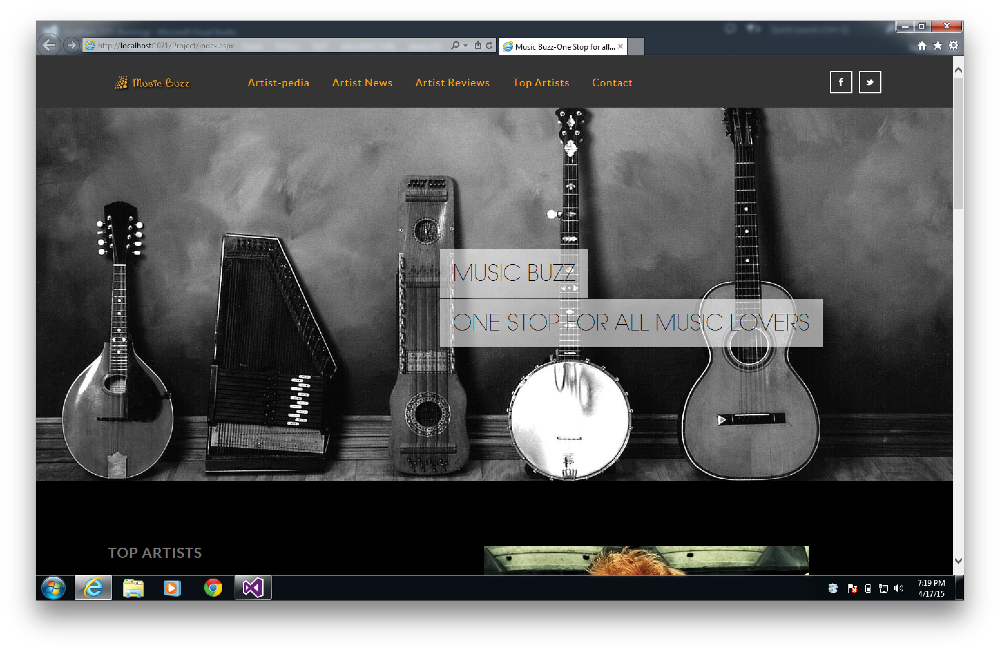

Home Page
COMPONENTS IN THIS PAGE
- Navigation bar
- Top 5 artists list
- Artists image slideshow
- A section which will display fact about an artist and have a link which will lead to the artist details page
- A section which will play a fun guessing game
- About me section
- Footer- link back to homepage
OUTLINE
The Navigation bar on the header will help in easy navigation around the different pages in the website.
There is a section in the Page which will display top 5 artists. There is a link present where user can move to see the top 20 artists who are currenlty topping the charts.
The right sidebar has a image carousal - using css and javascript , having the images of the famous artists
Section which will give you facts about an artist and have an link leading to a page where you can search for artists of your choice.
Section which will lead to about me Page where the users can read about the developer and come to know how this website was designed.
The facebook link page will direct you the group on facebook where you can show your interest by liking the page
API USED
Last.fm API is used to display top 5 artist in the home Page.
Noticable Components
-
This is the screenshot of my homepage.It has a navigation bar for easy access. The icon acts like an link which will come back to the homepage on clicking. 
-
This is the screenshot of the homepage when it is resized. The Navigation bar is collapsed and will be a dropdown menu when viewed in phone or smaller device.